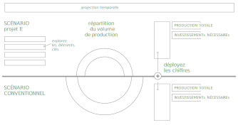

Un scénario pour la France
Le Projet E est un outil permettant d'explorer en détail le scénario de Transition Energétique proposé par Greenpeace; en naviguant dans les données et dans les années, chacun peut découvrir une trajectoire de fourniture d’énergie techniquement réalisable et pas plus coûteuse que la trajectoire conventionnelle.
Pour naviguer dans le Projet E, cliquez, et découvrez.
Par quinquennat, de 2012 à 2032 les données comparatives du "scénario conventionnel" et du scénario Greenpeace sont côtes à côtes, à égalité, permettant de faire le différentiel entre production / consommation / coûts des investissements.

Le scénario de transition énergétique dont est extrait le Projet E s’inscrit dans un projet de société humaniste. La baisse des émissions de gaz à effet de serre et la fin des risques nucléaires reposent sur une vision liant intimement l’Humanité à son environnement. Un projet de société humaniste où les besoins fondamentaux en énergie sont couverts pour tous, sans dommage pour les libertés d’autrui.
Le scénario entend démontrer que cette évolution repose sur un choix. Un choix collectif consistant à défendre une vision susceptible d’engager le pays entier dans un projet de société émancipateur et placera la France dans la modernité. Ni le nucléaire, ni l'amplification des dérèglements climatiques ne sont des fatalités. Si l’alternative est claire, il est désormais temps pour la France de s’y engager. Il revient aux représentants des citoyens français et aux membres du gouvernement de prendre les mesures politiques nécessaires à la traduction de cette vision en actes.
Le scénario de transition énergétique a été commandé par Greenpeace à l'Institut des techniques thermodynamiques du Centre aérospatial allemand DLR, et les conclusions du rapport ont été approuvées et signées par l’EREC et le GWEC (European Renewable Energy Council et Global Wind Energy Council)